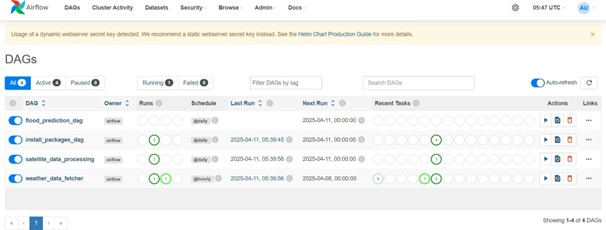
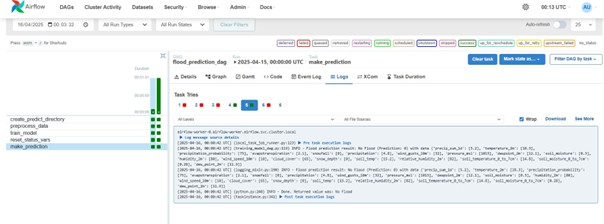
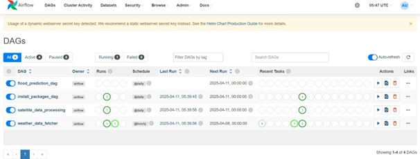
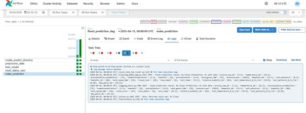

ETL Pipeline Orchestration
 



As part of my final year project, I designed and implemented an orchestration system for ETL pipelines to automate meteorological data processing in a cloud-native environment.
⚡ Key Responsibilities & Achievements
- Designed robust ETL workflows for data extraction, transformation, and loading.
- Utilized Apache Airflow to schedule, manage, and monitor pipeline tasks.
- Deployed pipelines on Kubernetes using Helm and Docker to ensure scalability, resilience, and portability.
- Integrated Python scripts for data cleaning, normalization, and enrichment.
- Stored processed data in a MySQL database, with version control maintained via Git.
This project allowed me to build strong expertise in data workflow automation, containerization, and modern cloud infrastructure.
🔗 View on GitHub⬅ Back to Projects